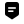

飞书 FeishuSend message 未配置
n8n UX references (behavior only; Sustainable Use License — no source copy):
https://docs.n8n.io/workflows/components/nodes/ (fetched 2026-11-10)
https://docs.n8n.io/workflows/components/connections/
Brand SVGs: local Simple Icons CC0 paths (GitHub/Slack) + Pure-authored Lark mark — see
PROVENANCE.md.